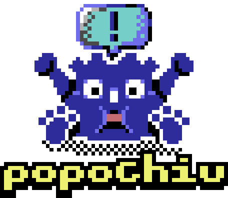

Popochiu is a Godot addon that allows you to create point-and-click adventure games.
It's inspired by Adventure Game Studio and PowerQuest Unity plugin.
Features
- Works with Godot 3 and 4 (new development will happen for 4 only).
- Designed to offer a fast and easy-to-use workflow like Adventure Game Studio and PowerQuest.
- Provides a Godot Editor plugin, as well as the adventure game engine, specifically designed for adventure games.
- A powerful yet simple scripting API gives total control on characters, objects, inventory items, dialogues, etc.
- Autocomplete for scripting functions in Godot scripting editor.
- Suitable for high-resolution as well as retro-styled, classic games.
- Blends easily with Godot, allowing experienced devs to customize and extending the functions with ease.
- Easy management of animations, interactions, audio, game state, saves and load, and other commong game features.
- Additional tools for advanced workflows, like animation importers and the like.
- Very permissive license.
Is Popochiu for me?
Popochiu is for everyone, but it's particularly suitable for you if you:
- are in search for a developer-friendly engine, with a powerful scripting language
- want to work on top of a state-of-the-art, general-purpose game engine with a great community and support (Godot)
- want to build your game on OS different than Windows (Linux or MacOSX)
- want to release your game on different platforms (PC, mobile and consoles)
- love Free/Open-Source Software
- want to join a cheerful and welcoming community of fellow developers
Popochiu may not be your cup of tea if:
- you are no coder and search for a visual editor like Adventure Creator
- you want to build games different from point-and-click adventures
Yes, that's it. We can't imagine for what other reasons you shouldn't at least give Popochiu a try! :)
Made with Popochiu
- The Maid Butcher Ritual by Skarmuse (Made for the Global Game Jam 2023)
- Popochius Little Adventure (AdvJam 2022) (in-development) | source code here
- Buggy Adventure (in-development) | source code here
- Pato & Lobo | source code here
People
Popochiu was created by Mateo @carenalga Robayo Rodríguez, who is the project's main maintainer and benevolent dictator.
It is now co-maintained by Paolo @stickgrinder Pustorino and Whyshchuck with contributions by our wonderful community members.
License
Popochiu is released under the very permissive MIT License, suitable for free and commercial projects, no strings attached.